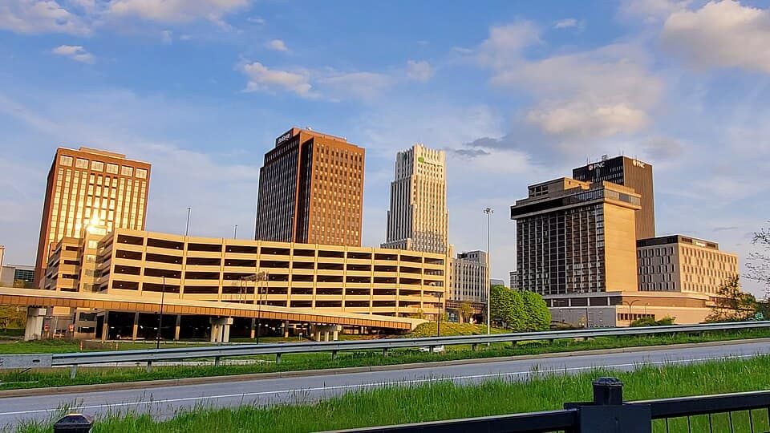
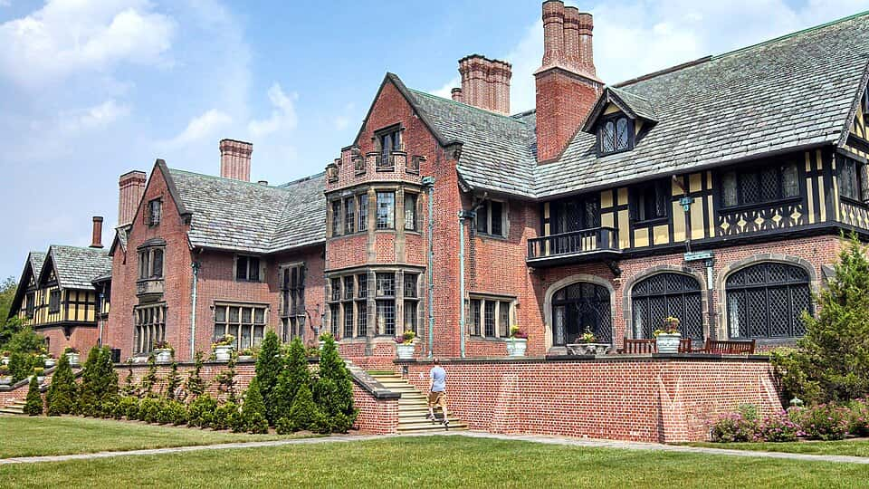
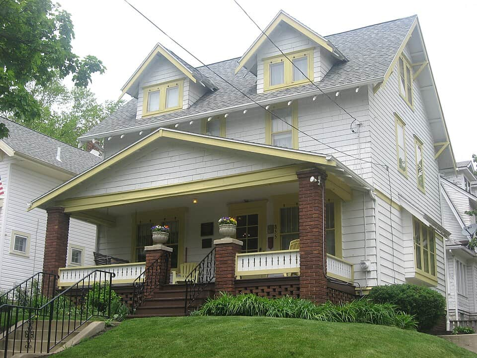
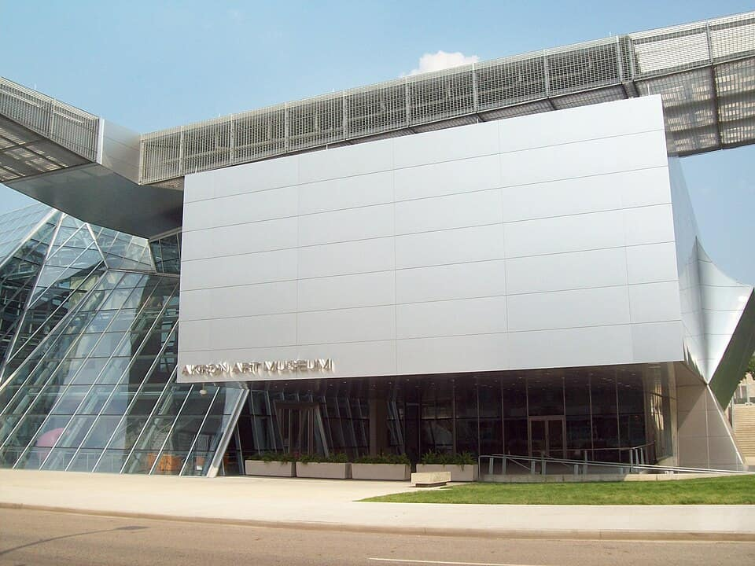
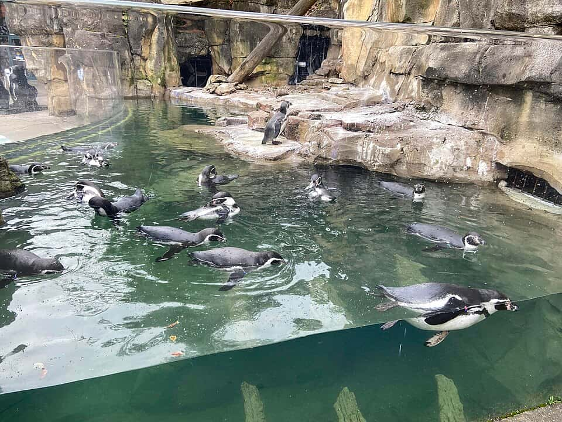

United States
Akron · Kent · Canton
rubber, football, Barberton chicken & the Galley Boy
150 places · 6 areas · every one sourced, pinned and status-checked · last checked . Ordered by tier, then by number of named sources. How we choose
Barberton chicken · Stan Hywet Hall & Gardens

Start with

Akron 45 places · area 1 of 6
Downtown, Highland Square, North Hill & Firestone Park
-
1 Must see within Akron · Burgers
Swensons Drive-In (original, Wallhaven)
Pop Swenson started selling burgers from his station wagon at Buchtel High in 1933 and opened this South Hawkins drive-in in 1934; it's still the flagship of Akron's signature burger, the Galley Boy, run to your car by sprinting curb-hops. Signal Akron readers' Best Burger 2025; Beacon Journal readers' bracket winner 2026; Reader's Digest's best burger in Ohio.
40 S Hawkins Ave, Akron, OH 44313
Recommended by , , +3, , ,

Photo: Brandon Bisel · CC BY-SA 4.0 · Wikimedia Commons (resized) 2 Must see within Akron
Stan Hywet Hall & Gardens
The 65-room Tudor Revival country estate Goodyear co-founder F.A. Seiberling built in 1912–15, with 70 acres of Warren Manning landscapes and an English garden — Akron's grandest house, a National Historic Landmark and the place Alcoholics Anonymous was born (Henrietta Seiberling introduced Bill W. to Dr. Bob in the Gate Lodge, 1935).
714 N Portage Path, Akron, OH 44303
Recommended by , , +1,
-
3 Must see within Akron
Akron Civic Theatre
John Eberson's 1929 Loew's atmospheric movie palace — a Moorish courtyard under a domed ceiling of twinkling stars and drifting clouds — restored and still Akron's main stage for touring shows and concerts.
182 S Main St, Akron, OH 44308
Recommended by , , +1,

Photo: Nyttend · Public domain · Wikimedia Commons (resized) 4 Must see within Akron
Dr. Bob's Home (birthplace of Alcoholics Anonymous)
The 1914 house where Dr. Bob Smith and Bill Wilson worked out AA's principles and recruited its first members in 1935 — a National Historic Landmark (2012) kept as a museum and a pilgrimage site for the millions in 12-step recovery.
855 Ardmore Ave, Akron, OH 44302
Recommended by , , +1,
-
5 Must see within Akron
Sojourner Truth Legacy Plaza
Where Sojourner Truth gave her 'Ain't I a Woman?' speech at the 1851 Ohio Women's Rights Convention (Old Stone Church site). A plaza and statue were dedicated on the speech's anniversary, May 29, 2024, beside the 1981 Ohio Historical Marker. Free.
37 N High St, Akron, OH 44308
Recommended by , , +1,
-
6 Must see within Akron · Italian
Luigi's Restaurant
Downtown Akron's Italian landmark since 1949 (Ciriello family), its brick entry papered with signed celebrity photos and a line out the door late at night. Signal Akron readers' Best Pizza 2025; No. 1 pizza and No. 1 Italian in Akron Life's 2026 330 Flavor Awards.
105 N Main St, Akron, OH 44308
Recommended by , , +1,

Photo: Sleepydre · Public domain · Wikimedia Commons (resized) 7 Must see within Akron
Akron Art Museum
Akron's art museum: the 1899 Renaissance Revival former post office joined to Coop Himmelb(l)au's 2007 'Roof Cloud' steel-and-glass Knight Building — modern and contemporary American art, free admission.
1 S High St, Akron, OH 44308
Recommended by , ,
-
8 Must see within Akron
Derby Downs (All-American Soap Box Derby)
The WPA-built 1936 hill track in southeast Akron where kids in gravity-powered cars have raced the All-American Soap Box Derby world championship every July since 1946.
789 Derby Downs, Akron, OH 44306
Recommended by , ,
-
9 Must see within Akron · American
Diamond Grille
Akron's frozen-in-time 1935 steakhouse — neon sign, phone booth, Sputnik chandeliers — and the haunt of tour pros like Tiger Woods during Firestone weeks. No. 1 Best Restaurant in the 330 (with sister Kingfish), Akron Life 330 Flavor Awards 2026.
77 W Market St, Akron, OH 44308
Recommended by , ,

Photo: Geographer365 · CC BY-SA 4.0 · Wikimedia Commons (resized) 10 Must see within Akron
Akron Zoo
Compact, well-loved accredited zoo on Perkins Park in west Akron — Komodo dragons, snow leopards, Grizzly Ridge and the Journey to Madagascar building.
500 Edgewood Ave, Akron, OH 44307
Recommended by ,
-
11 Must see within Akron · Frozen custard
Strickland's Frozen Custard (original, Triplett Blvd)
Bill and Florence Strickland opened this walk-up stand in 1936 on the same spot it still occupies; Bill, an Akron Pure Milk man, built his own batch freezer to keep air out of the custard. A spring-to-fall Akron ritual and a WKYC top-15 Northeast Ohio ice cream pick.
1809 Triplett Blvd, Akron, OH 44306
Recommended by ,
-
12 Must see within Akron · Nepali
Saffron Patch
Family-owned North Indian kitchen in the Merriman Valley since 1997. Signal Akron readers' Best Ethnic/International Food in both 2025 and 2026, and a 330 Flavor Awards Best Indian winner; Akron Life features it in its Merriman Valley guide.
1238 Weathervane Ln, Akron, OH 44313
Recommended by ,
-
13 Must see within Akron · Italian
DeCheco's Pizzeria
Family-run Firestone Park pizzeria since 1993. Won the Akron Beacon Journal's 2025 best-pizza-in-Akron reader bracket (nearly 4,000 votes) and Signal Akron's 2026 Best Pizza after two years as runner-up. Second shop at 1581 Canton Rd, Ellet.
2075 S Main St, Akron, OH 44301
Recommended by ,
-
14 Worth the detour within Akron
Cascade Locks Park & Mustill Store
The staircase of seven Ohio & Erie Canal locks that lifted boats 70 ft to the Akron Summit, the canal's highest point; the restored c.1847 Mustill Store at Lock 15 is now a seasonal canal museum on the Towpath Trail.
Cascade Locks Park, N Howard St, Akron, OH 44308
Recommended by , , +1,
-
15 Worth the detour within Akron
Glendale Steps
242 hand-dressed sandstone steps the WPA laid in 1936–37 up a 200-ft slope — Gertrude Seiberling's idea, designed by Warren Manning — a Depression-era monument in a city the rubber layoffs hit hard.
Glendale Ave & S Walnut St, Akron, OH 44302
Recommended by , , +1,
-
16 Worth the detour within Akron
Summit Lake Nature Center & Summit Lake Trail
Summit Metro Parks' urban nature center on Summit Lake — the Ohio & Erie Canal's high point — born of the Knight/Kresge-backed Reimagining the Civic Commons program, with the 2.75-mile Summit Lake Trail looping the lake onto the Towpath. Free.
411 Ira Ave, Akron, OH 44301
Recommended by , , +1,
-
17 Worth the detour within Akron
Goodyear Airdock
The 1929 airship hangar beside Akron Fulton airport — at completion the largest building in the world without interior supports, big enough to make its own indoor weather; it built the Navy's Akron and Macon. Seen from outside (private).
1210 Massillon Rd, Akron, OH 44306
Recommended by , ,
-
18 Worth the detour within Akron
Perkins Stone Mansion & John Brown House
Summit County Historical Society's two houses on Akron's west side: Col. Simon Perkins's 1837 Greek Revival stone mansion, and across the road the c.1830 house abolitionist John Brown rented from Perkins in 1844–54 while they ran a sheep and wool partnership.
550 Copley Rd, Akron, OH 44320
Recommended by , ,
-
19 Worth the detour within Akron
7 17 Credit Union Park (Akron RubberDucks)
Downtown's 1997 HOK-designed ballpark (Canal Park until 2025), home of the Double-A Akron RubberDucks (Guardians affiliate), with the Ohio & Erie Canal running behind the left-field wall.
300 S Main St, Akron, OH 44308
Recommended by , ,
-
20 Worth the detour within Akron
Quaker Square
Ferdinand Schumacher's oat mills became Quaker Oats; its 36 120-ft concrete grain silos (1932) were later turned into a hotel with perfectly round rooms — now University of Akron dorms, with the complex slated for a hotel revival.
135 S Broadway St, Akron, OH 44308
Recommended by , ,
-
21 Worth the detour within Akron
Glendale Cemetery & Civil War Memorial Chapel
Akron's 1839 rural garden cemetery (88 acres, National Register) — rubber barons and founders in a wooded ravine, and the restored 1876 Gothic Revival chapel the GAR's Buckley Post built for Summit County's Civil War dead.
150 Glendale Ave, Akron, OH 44302
Recommended by , ,
-
22 Worth the detour within Akron
Hower House Museum
28-room Second Empire Italianate mansion (1871) of 'Father of Akron Industry' John Henry Hower, designed by Akron Plan architect Jacob Snyder; deeded to the University of Akron in 1970 and on the National Register (1973). Open for tours with the Hower family's world-travel collections.
60 Fir Hill, Akron, OH 44304
Recommended by , ,
-
23 Worth the detour within Akron
Lock 3 Park
Downtown Akron's civic park on the Ohio & Erie Canal, reopened in November 2024 after a $17.5M rebuild with a performance pavilion, gardens and winter ice-skating ribbon; home of the Akron Children's Museum. Free.
200 S Main St, Akron, OH 44308
Recommended by , ,
-
24 Worth the detour within Akron
E.J. Thomas Performing Arts Hall
The University of Akron's 2,955-seat hall (1973, opened with a Carlos Chávez world premiere), home of the Akron Symphony and Broadway tours presented with Playhouse Square.
198 Hill St, Akron, OH 44325
Recommended by , ,

Cuyahoga Falls, Stow, Hudson & North Summit 26 places · area 2 of 6

Kent & Portage County 18 places · area 3 of 6
Kent State, Ravenna, Aurora

Barberton, Norton, Wadsworth & Green 14 places · area 4 of 6

Canton, North Canton & eastern Stark 35 places · area 5 of 6

Massillon & southern Stark 12 places · area 6 of 6
How we choose
Every place is recommended by named sources (review-aggregator star ratings never count as the recommender), pinned to its door from a published coordinate, and status-checked. Closed places stay, flagged, so you know they’re gone.
- Must see
- The places to plan a visit around — graded within each area, not across the city.
- Worth the detour
- Strong picks, worth going out of your way for.
- Deep cut
- For the curious: smaller, odder, more local.
Within each area, places are ordered by tier, then by number of named sources — never by popularity. Numbers on the cards match the pins on the map. No ratings, prices or opening hours are shown, because the guide doesn’t hold verified ones.
68 sights and 82 places to eat across Akron, the north-Summit towns up toward the Cuyahoga line (Cuyahoga Falls, Stow, Hudson), Kent & Portage County, Barberton and Wadsworth, and Canton, North Canton & Massillon. Each is traceable to the source that named it. The canon is its own: Serbian-style Barberton chicken with hot rice, the Swenson’s Galley Boy, Strickland’s frozen custard, Taggart’s Bittner, Bender’s Tavern and North Hill’s Nepali & Bhutanese kitchens — plus the Pro Football Hall of Fame, Stan Hywet, the McKinley memorial and the May 4 site at Kent State.
Take Akron · Kent · Canton with you
Every place, its sources, the Guidebook and the photos at a small size. Map tiles are not saved: offline, the map shows our own pin schematic and every place stays listed.